So the first project I would like to walk you through is a class project for Human Centered Design. The product is called Hoppr. It is a mobile app designed for college students to find free and trustworthy accommodations while traveling alone. You probably noticed some keywords here, such as free, trustworthy, alone, etc. I will explain later how I came up with the statement like that.
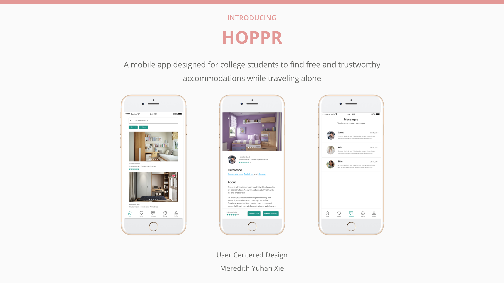Ok, so some background information I want to share. It is a group-based 10-week-long class project, and I was the designer on the team. I also participated quite a bit as a researcher when conducting user research and usability testing.
The target user of the project is predefined: college student. In other words, no matter what product my team ended up designing, it need to serve college students. Also, since it is a rather broad scope, the whole class went through a raffle to pick a topic to focus on, and my team picked travel. Our prompt, before start on anything, is we need to apply technology and user centered design to ease or improve college student’s travel experience.
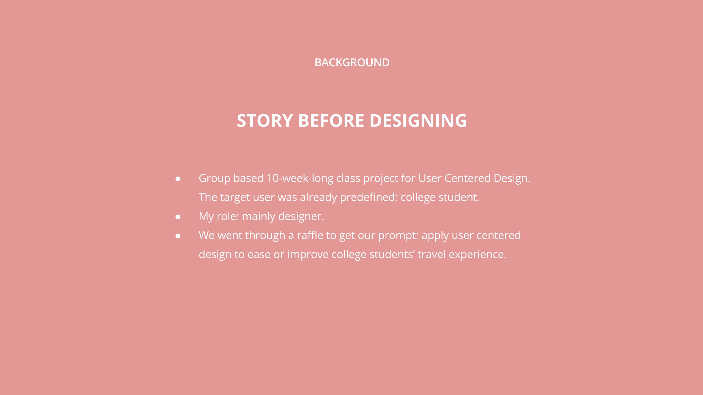This is roughly the design process I went through. In the next probably 20 minutes, I will walk you through what problem was I solving, how did I know it is a real problem, the process of ideating and validating solutions. I will also have an interactive prototype in the end, to walk through the major user flow.
Research process
When it comes down to things you might run into in travel, there are many things and aspects that are involved, there is transportation, there is food, accommodation, and maybe language translation if necessary. So, among all these aspects and problems that are involved in college students’ travel experience, which problem should I solve? Which problem that brings great value to our users and is, indeed, a real problem?
Me and my team brainstormed on what causes pain in travel for college students, and in the same time, we ran surveys and interviews to our target users to gain more user insights about their travel experience. I drafted questions on Google forms initially, focusing on the pain that people experienced before. Within the first week, we received our first 29 survey result.
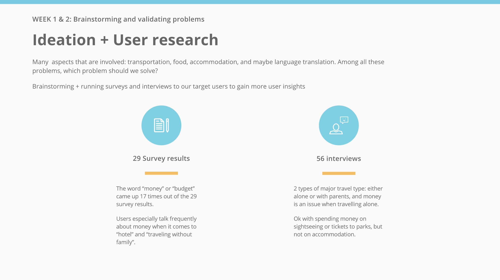Among the survey results we received, the most frequent word that showed up was money, or budget. The word showed up about 20 times in just 29 survey results. Also, Users especially talk frequently about money when it comes to “hotel” and “traveling without family”.
56 interviews in total within one week. We have four members in our team. Within that one week of intensive interviewing and receiving and analysing results, we met up everyday, talking about the results we got that day, and we can improve our questions we ask users the next day. Through this process, we found 2 very interesting things:
- Money is an issue when travelling alone. When travelling with parents, they don’t care.
- Our users are ok with spending money on sightseeing or tickets to parks and resorts, but not on accommodation.
Here are some quotes from our interview:
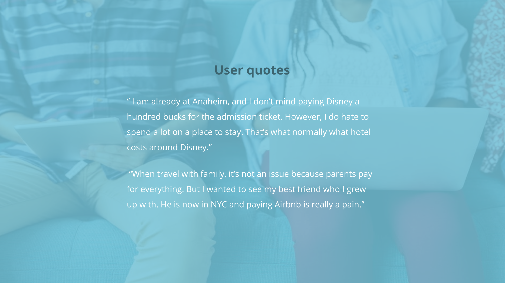Now we know that money spending on accommodation is one problem users concern themselves with. However, why users concern about it then? Apparently, the current market choices does not satisfy users. There is a gap somewhere. So, besides user research, another important part of my research process is competitive analysis. Let’s find out what the gap is.
In interviews, I noticed that a lot of users talking about hotel and Airbnb, with also 3 people mentioning a product called CouchSurfing. These are the main current options for users. Along with the survey and interview results we gathered so far, I identified that our competing products are: Airbnb, Hotel and CouchSurfing. If you are not familiar with CouchSurfing, it is a platform for members to stay as a guest at someone's home. CouchSurfing was mentioned several times by some users we interviewed, but interesting thing is, they all said “yeah, I know what it is. I just have never used it before.”
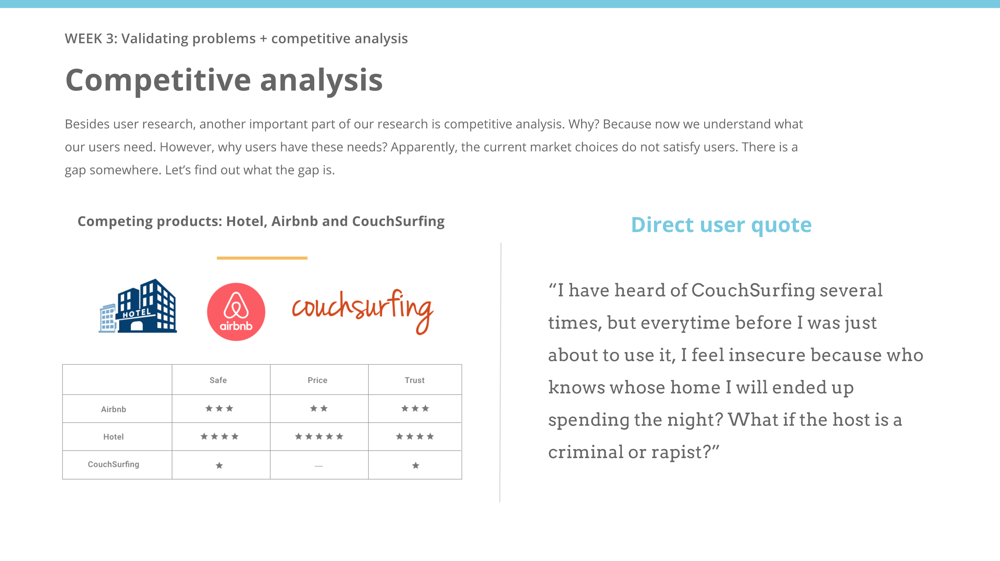Here is a key problem: why people choose not to use CouchSurfing? So I continued online research and read people’s review of this product, and I interviewed another 3 college students who used this product before.
The answer, I found, is trust. Here is another direct quote from users “I have heard of CouchSurfing several times, but everytime before I was just about to use it, I feel insecure because who knows whose home I will ended up spending the night? What if the host is a criminal or rapist?”.
With both qualitative and quantitative data we got so far, here is a diagram, the left bottom corner of this slide, of the result of competitive analysis. As we can see, from the three key factors users value the most, safe, price and trust, there is no single product that can bringing it all. AND THAT, is how me and my team finalized on our people problem statement
What people problem are we solving?
Ok some important things to address before I move on: How do we know this is a real problem and why is it important to solve? Again, from user research. In interviews, there are scenarios come up rather frequently. How will we know if we’ve solved the problem? Even though it is just a class project, even though I cannot actually launch the product, I think I will set the metrics to be retention rate right now: People who used my product received value from it, that they use Hoppr and then love it enough to come back.
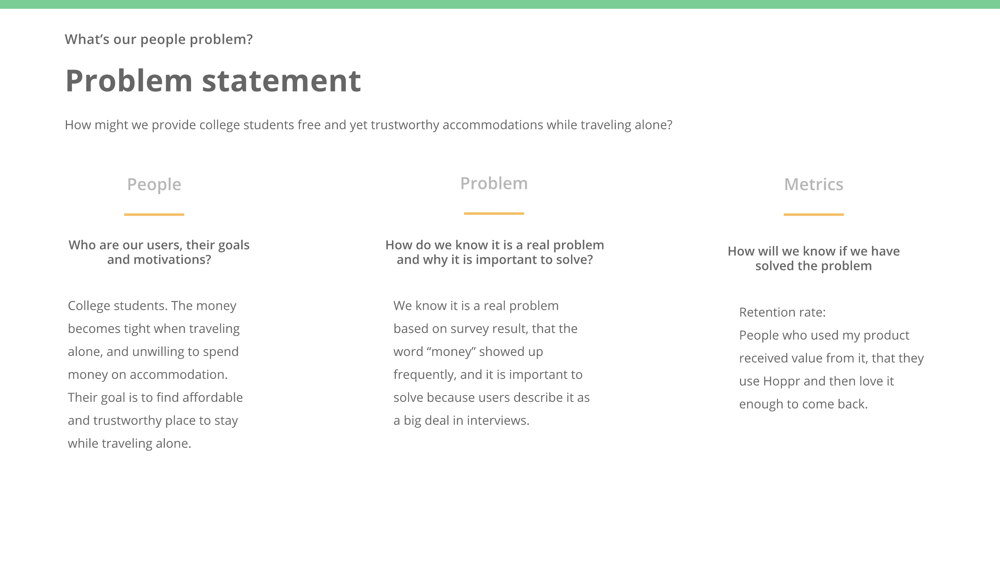Ideation studios
Now we have enough context, it’s time to dive into design.
The first step I took here is ideation. I watched a Facebook conference on design before, and I really liked the quote “great design comes from brute force”. In this process, me and my team focused on ideating on the related topics. The major ones are how do we make accommodation free for college students and how do we build trust between strangers (host/guest relationship)?
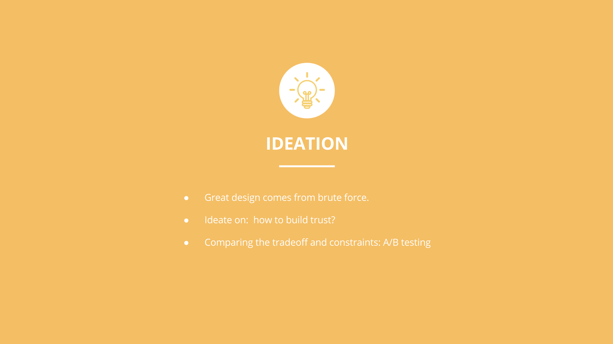So in our ideation studio, we had a lot of post-its covering the whiteboard. I decided not to show you the picture of that, because I am sure you have seen those kind of pictures really frequently, and you can barely see anything clearly on those pictures. Basically, me and my team went a bit crazy on the topic how do we build trust among guest and host who are totally strangers. The first several ideas were rather obvious, such as holding deposits, or gathering critical information such as government issued ID from both sides, AND, some crazy ideas were also generated when we hit the 30th or 50th idea, such as if one person behaved bad while staying with others, his or her nude picture, that was taken before for registering for our product, will be posted on social media.
Of course we cannot go with those wild ones. However, there was one idea that was generated in later session of ideation, that we call mutual friends. So what it is is that users log into our product Hoppr using their Facebook account, and Hoppr catch their friends connections and location data so Hoppr can recommend possible places to stay while traveling alone, based on whether the two person have mutual friends on Facebook or not.
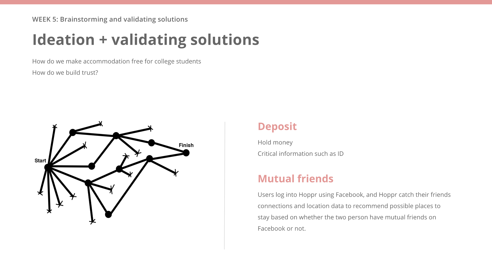Me and my team each picked our favorite. In the end, there were two ideas that was left that we think worth moving forward. One is holding deposit, the other is mutual friends. At this point, me and my teammates kinda had conflicts on which one we should move on with. I was leaning towards the mutual friend idea, and one of my teammate wanted to move on the deposit idea.
What did we do to decide on which one to choose?
We did a little test on users. The first test we did was that I mocked up 2 versions of quick and rather low fidelity design, one adapted the deposit idea, one adapted mutual friends idea, and me and my teammate tested both of them out on users in our design studio.
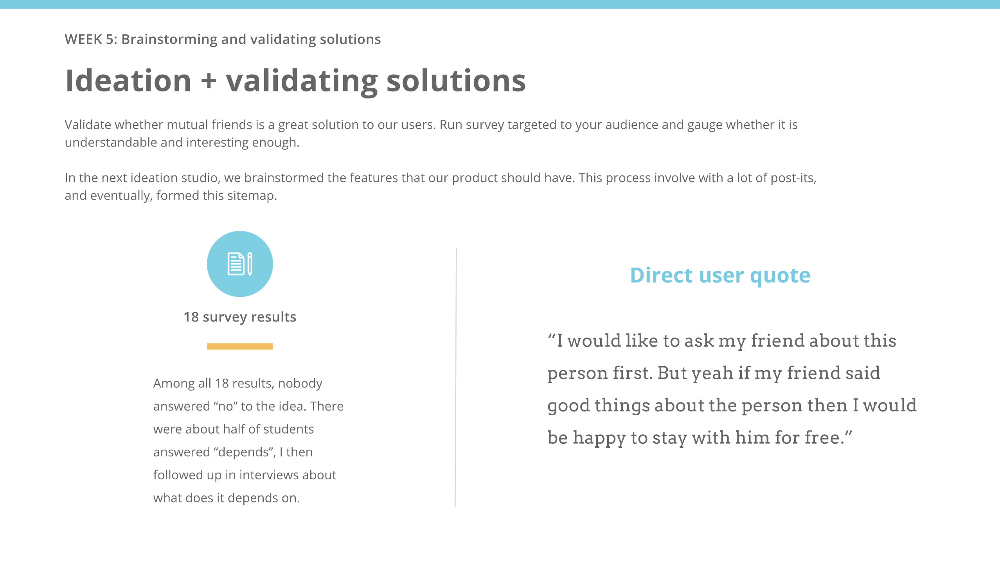The group of people who tested on the mutual friends version of idea responded a lot more positive with the product. To directly quote users, one person who used mutual friends mockups said: “Yeah I like the idea getting to know my friend’s friend. I feel with my friend who I can trust in between introducing us, I feel I am making a new friend.”
The other research I did to validate on the idea was to send a survey targeted to people and gauge whether they think of the mutual friends idea. Very surprisingly, the survey result came back very positive. Out of 18 survey result we received at this point, nobody answered “no” to the mutual friends idea. Of course I followed up in interviews about detailed responses. I especially invited the teammate who preferred the deposit idea to come along with me to interview sessions, and the result of our interviews with users were really good, so my teammate agreed on to move forward the mutual friends idea.
In the next ideation studio, we brainstormed the features that our product should have. This process involve with a lot of post-its, and eventually, formed this sitemap.
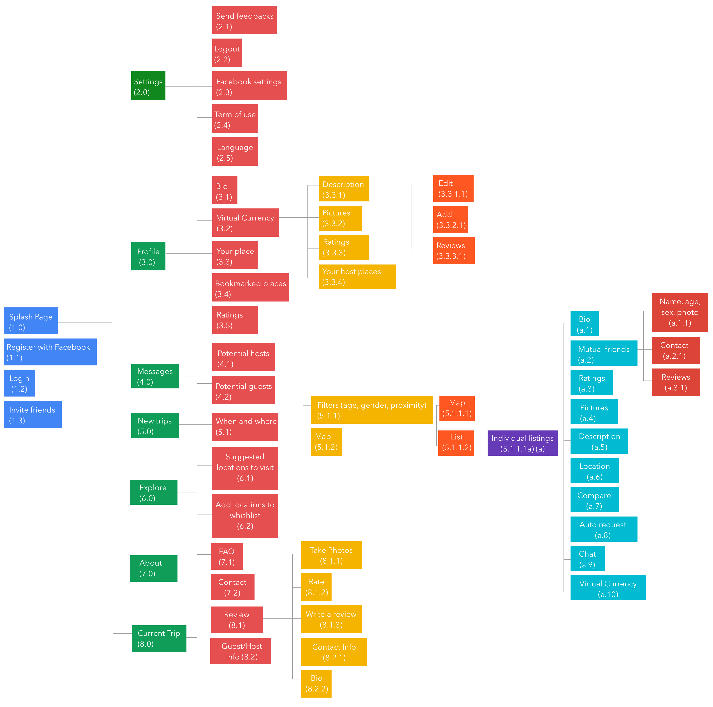Testing and iteration
One of the major part of this design process is to test things out. I started on paper prototype and low fidelity mockups, mainly to see how the interaction should be like, then moved on to high fidelity in the end. Along the way, there were many changes been made based on the feedback I got from people and other designer on my team. Here I will talk about some tasks I designed and tested and how the iteration helped the design.
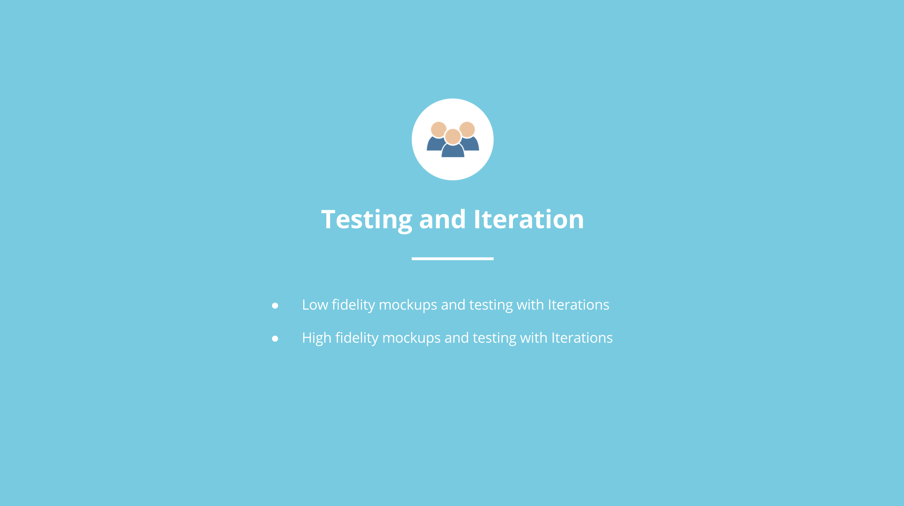In both paper prototype and low fidelity mockups, there were 2 tasks to test out: They were setting date, location, and choose an accommodation. The other is to browse through an accommodation and successfully ask for reference and book.
I found some interaction issues along the testings, for example: interaction: date selection: at first I designed users setting date by drop down menu, but users responded as the interaction wasn’t quite smooth. So I tried several other interaction options, such as tap on a calendar, and scrolling to set a date. Eventually I moved forward the tap on calendar to set a date interaction and improved the interaction later on.
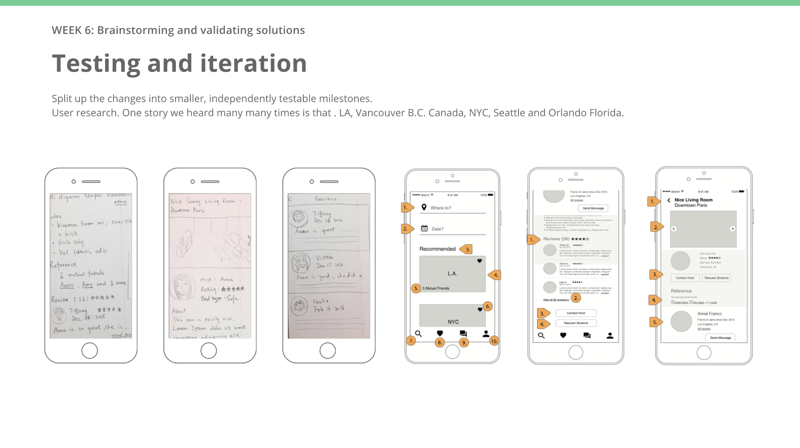Another big one I caught during this session was the button “contact host” location. Initially I had the “request booking” and “contacting host” on the very bottom of the room description page. However, I realized users sometimes simply trying to book the room without scrolling all the way down to the bottom of the page, so I added two extra “request booking” and “contact host” on the top of the page.
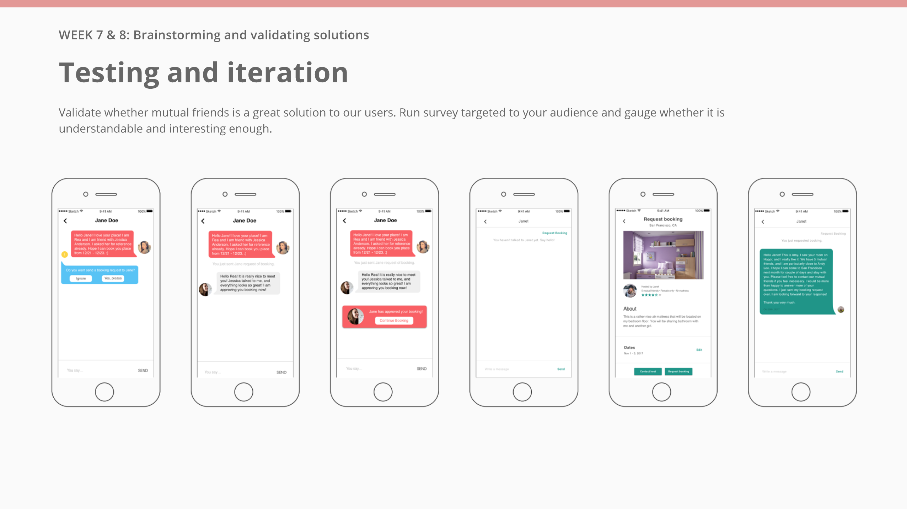So during one of the usability testing, one user said that “yeah, I really like the idea of this app. You know, if this app exist for real, I would probably use it every weekend just to travel and stay with others and probably never play the role of being a host.”
You see one problem here? This is a big constraint of all class projects -- we can’t launch the app and gather real world feedback quickly enough to iteration, and it leads to result like this one: I missed that people get benefits by staying with others for free, but for people who play the role of hosts, what do they get? Nothing!
Obviously they make friends with their mutual friends, but based on the conversation I had with people who tested out the prototypes for me, ohhh yeah they are not very interested in the idea of being hosts comparing to how much they are interested being the guests. If too many people being guests, and not enough people hosting, obviously it breaks the system I designed.
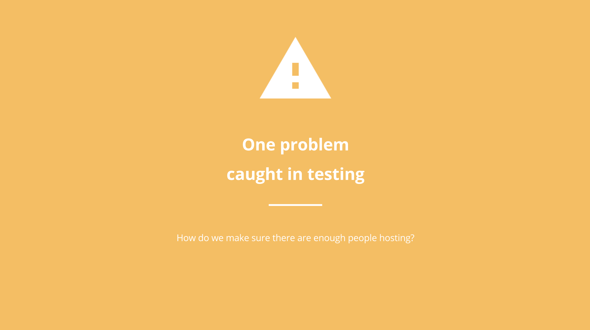So, problem to solve: how do we make sure that there are enough people hosting? To be totally honest, by the time I realized this problem, it was already week 8. What that means to me was that, omg I am about to present the design in front of my professors and the whole class, AND several senior designers from Amazon, Artefacts and other tech companies in Seattle who will probably show up later in my career fair.
What am I gonna do? Time is ticking. So, me and my teammates went in our design lab and did ideation studio again, around the problem “how do we make sure there are enough people hosting in Hoppr”. Again, many ideas were generated, such as hosts are awarded with money, or best hosts ranking, etc. One idea we ended up agree on and moved forward with was: virtual currency, or what we call, travel coins. What that means, is that users have certain balance of virtual currency when they sign up. Every time they stay with others, they pay travel coins to hosts. In order to continue have travel coins to spend, people need to host to earn it.
This way, everyone who uses Hoppr are both guest and host. Me and my team decided to move forward with it, and I do think there are maybe some constraints about this idea too, but we were running out of time and did not have the resources to launch the app to see the data whether virtual currency is really a great idea like I think it is. We simply just had to move along considering the hard deadline. Ok moving on.
High fidelity mockups
Ok last part, visual craft to high fidelity mockups. Continuing on iteration and testings, a lot of research on color study, tried out different color choices, and finally the product you are looking at right now. If you click on the interface, it takes you to an interactive prototype. I can walk you through the major user journey here if you want.
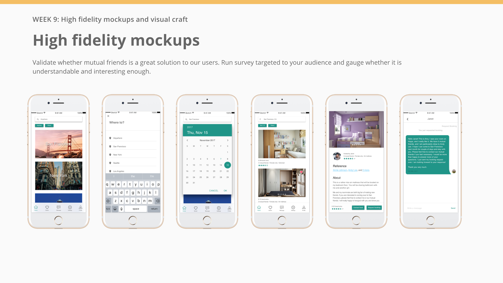Here is an interactive prototype of the app. Feel free to play around with it.
What I learned and future direction
So some future directions and several things I learned throughout the process: if I have more time and actually have the chance to launch Hoppr, I will want to see the data of how many people sign up, use it, actually going on a trip using Hoppr, and coming back to Hoppr after using it on a trip. I want to see users giving me reviews, and learn from what I can keep doing to make this product better.
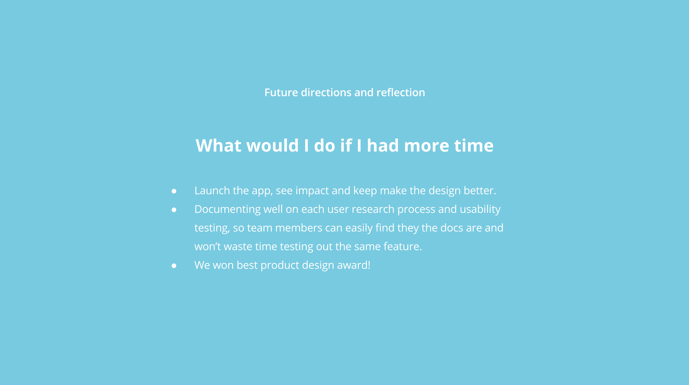I learned a lot from this process, and the most most important one is, documenting well! What I mean is that each user research session, documenting well when, where and who was involved in the interview, survey, organizing all of them well in the team drive, so my team member wouldn’t have a hard time navigating to the doc they want to find. Also, documenting well on each of the usability testing, what went well, what did not, and make sure that my team members can easily understand what I did so they don’t waste time testing out the same features.
Also, one result: at the end of the final presentation in front of class, professors and designers from Amazon, Artefect etc, my team won the best product design award in the class! The capstone professor recommended us to continue work on this project in our Capstone, which is a 6 month long senior graduate design project, if possible.